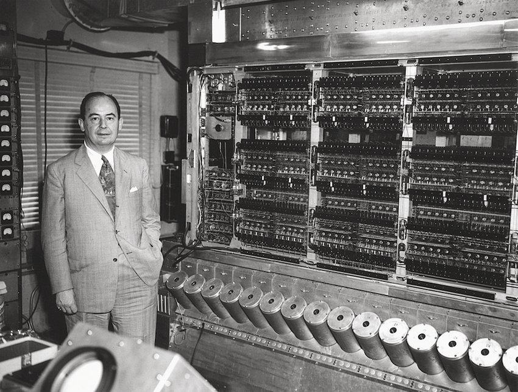

O Primeiro Modelo Criado Por John Von Neumann
O brilhante Matemático
John Von Neumann deixou às gerações futuras um legados extremamente importante. Nasceu a 28 de dezembro de 1903, em Budapeste, na Hungria, e foi um dos primeiros membros permanentes do Instituto de Estudos Avançados, na América do Norte, em 1930. Durante a Segunda Guerra Mundial foi um dos cientistas a participar no desenvolvimento da bomba atómica em Los Alamos. Entre 1944 e 1946, Von Neumann ajudou a preparar um relatório sobre a capacidade dos computadores.
Em 1945 escreveu "First Draft of a Report on the EDVAC (Electronic Discrete Variable Automatic Computer)", um relatório que sugere a utilização da linguagem binária e que os programas e outros dados devem estar na memória interna do computador. Foi um dos responsáveis pela criação do ENIAC (Electronic Numeric Integrator and Computer), o primeiro computador para uso profissional (militar).
Eniac
O ENIAC iniciou as suas operações em fevereiro de 1946 mas ainda não possuía um programa armazenado na memória. A programação deste computador realizava-se através da ligação de cabos em conectores dispostos em quadros - era uma "programação por hardware". John Von Neumann introduziu a noção de "programação por software" ao colocar um programa na memória do ENIAC. Para isso, o matemático utilizou pela primeira vez a linguagem binária, linguagem que é usada pelos computadores de todo o Mundo.
Edvac
Electronic Discrete Variable Automatic Computer (EDVAC), que surge no seguimento do relatório escrito em 1945 e que organiza o sistema de computação em quatro áreas principais: Unidade Central de Controle, Unidade Aritmética e Lógica, Memória e Um Conjunto de Dispositivos de Entrada e Saída (Periféricos). Este trabalho deu origem ao modelo ou arquitetura "Von Neumann". Apesar da rápida evolução da informática, o seu modelo continua atual e a grande maioria dos computadores existentes apresenta uma arquitetura similar à proposta pelo matemático.
Simplicidade: seguindo as regras, dificilmente vai cometer erros que possam comprometer o seu programa. O compilador (um programa de sistema que traduz o código legível para os seres humanos e converte para a linguagem binária que o processador “entende”). também avisa a maior parte dos erros de sintaxe que você cometer.
Unidade Central De Controle
A Unidade de Controle é um circuito que gera sinais elétricos para organizar como e quando as instruções devem ser executadas. Esses sinais direcionam a comunicação entre a CPU e componentes como memória RAM e dispositivos de entrada e saída de dados.
O modo de trabalho da Unidade de Controle depende da arquitetura e sofisticação do processador. Mas, em todos os casos, o componente segue a rotina de buscar instruções na memória, interpretá-las e direcioná-las no momento adequado para que as operações sejam executadas.
Unidade Lógica e Aritmética (ULA)
A Unidade Lógica e Aritmética (ULA) é um circuito responsável por executar operações lógicas, cálculos como adição e multiplicação, além de operações booleanas (baseadas no sistema binário) complexas.
Todas essas operações são essenciais para que a CPU realize cálculos e comparações que levam ao processamento dos dados conforme as instruções direcionadas pela Unidade de Controle. Por isso, a ULA é considerada um elemento crucial em todos os tipos de CPU.
Memória RAM
A memória RAM — Memória de Acesso Aleatório ou Random Access Memory, em inglês — permite a leitura e a escrita de arquivos. Ou seja, a sua função é possibilitar que o processador tenha acesso imediato aos dados que deseja, contribuindo para uma maior rapidez e capacidade de resposta das solicitações.
A memória RAM — Memória de Acesso Aleatório ou Random Access Memory, em inglês — permite a leitura e a escrita de arquivos. Ou seja, a sua função é possibilitar que o processador tenha acesso imediato aos dados que deseja, contribuindo para uma maior rapidez e capacidade de resposta das solicitações. É por isso que a memória RAM é importante para multitarefas. Os aplicativos carregados ficam lá até que sua RAM fique cheia e precise limpar alguns dados para conseguir abrir espaço para outros.
Memória Interna
A memória de armazenamento interno é responsável por guardar os arquivos (apps, jogos, músicas, documentos e fotos) de forma definitiva em um local dedicado. Por isso, o armazenamento interno sempre será maior que a memória RAM, por padrão.